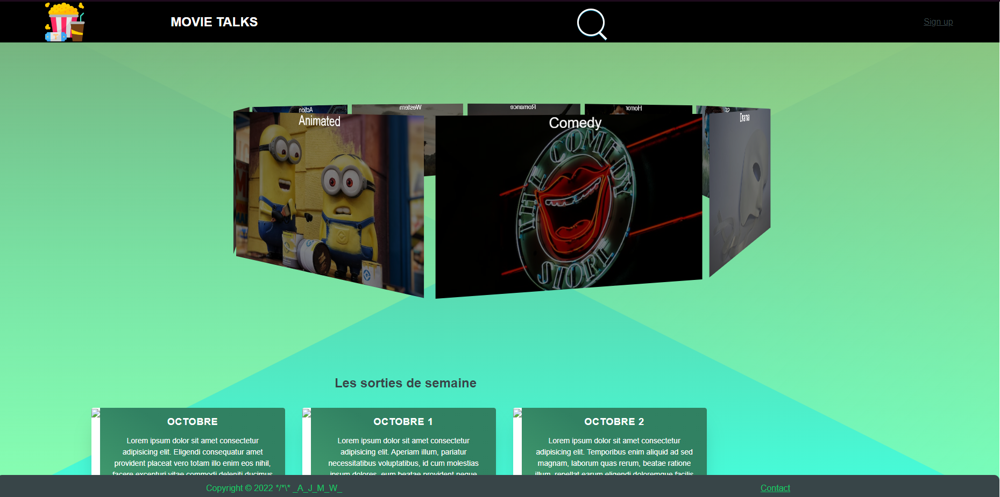
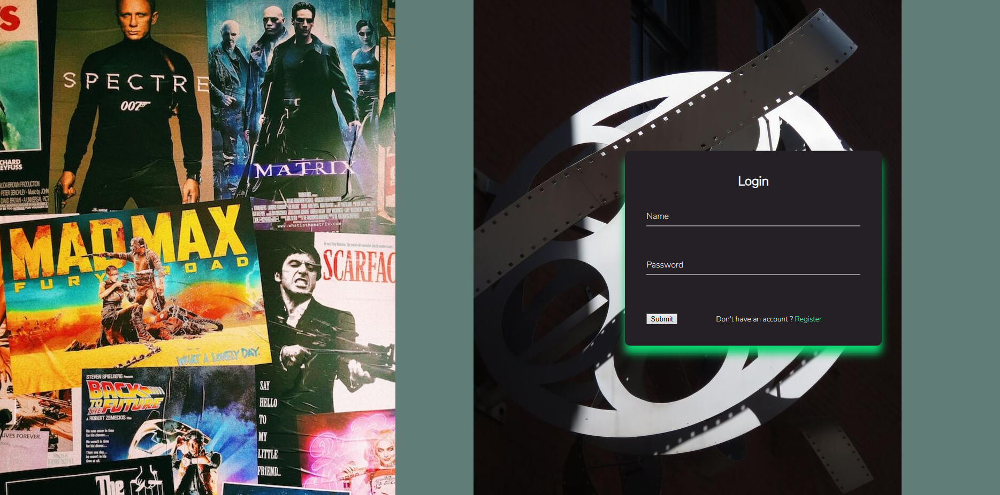

De Castro Hugo
Réseau social pour cinéphile
Site web de réseau social pour cinéphiles, ce site à été réalisé avec les langages PHP,HTML/CSS et Javascript. Ce site web est un endroit ou les cinéphile peuvent se retrouver et parler et débatre sur les films de leur choix. Ce site comporte une partie de connexion pour se connecter avec un compte qu'il peut créer. Le site est accesible même sans être forcément connecté, par contre, si l'utilisateur souhaite commenter un film pour donner son avis ou répondre à un autre utilisateur, il devra se connecter.Voici son menu:

Ainsi que sa partie connexion:
